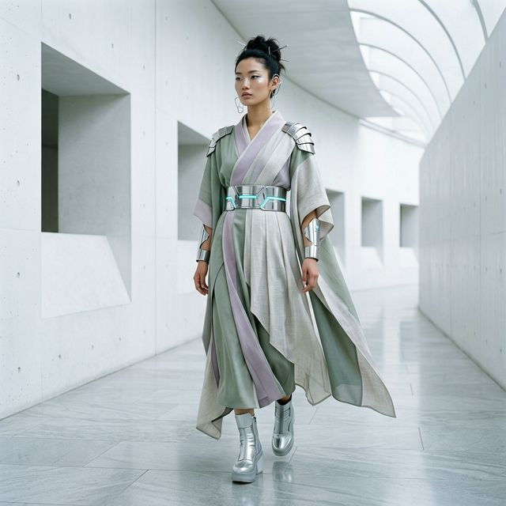
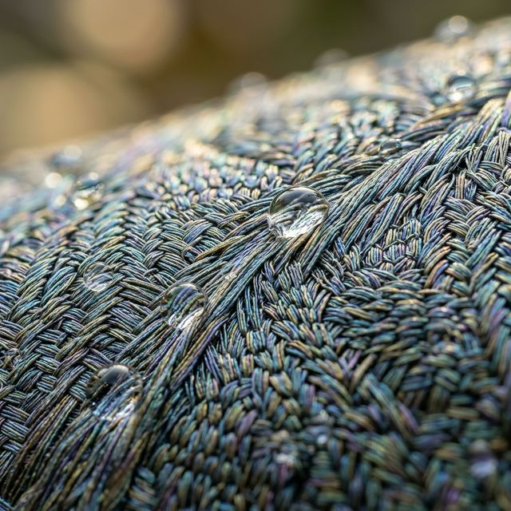

2026년의 패션 월드는 큰 혼돈에 빠졌습니다. 수년간 이어져 온 '올드 머니(Old Money)'와 '조용한 럭셔리'는 이제 대중화되어 더 이상 차별화된 가치를 주지 못합니다. 이 틈을 깨고 나온 것이 바로 사이버-젠(Cyber-Zen)입니다. 이는 단순히 옷을 입는 방식을 넘어, 고도의 기술 문명 속에서 '정적'인 내면의 평화를 추구하는 2026년 인간상의 투영입니다.

1. 소재의 철학: 지속 가능한 하이테크의 탄생
2026년 패션의 질적 개선은 '원단'에서 시작됩니다. 사이버-젠 스타일의 핵심은 무광의 리넨이나 실크처럼 보이지만, 실제로는 랩 그로운(Lab-grown) 바이오 소재를 사용하는 것입니다. 해조류에서 추출한 섬유나 버섯 균사체로 만든 가죽 등이 2026년 최고의 럭셔리 소재로 대접받습니다.
이런 소재들은 단순히 친환경적일 뿐 아니라, 체온 조절 기능이나 미세먼지 차단 코팅 등 고도의 기능성을 숨기고 있습니다. 겉모습은 지극히 고요하고 정적(Zen)이지만, 그 속엔 가장 차가운 기술(Cyber)이 흐르고 있는 것이죠. 당신이 입은 옷이 단순히 브랜드를 뽐내는 도구가 아니라, 당신의 가치관을 대변하는 매개체가 되어야 합니다.
2. 2026 컬러 팔레트: '이리데슨트 뉴트럴'
올봄, 당신이 주목해야 할 색상은 단순히 화이트나 베이지가 아닙니다. 빛의 입사각에 따라 미세한 보라색이나 푸른색이 감도는 이리데슨트 뉴트럴(Iridescent Neutral)입니다. 디지털 세상의 픽셀 같은 영롱함과 자연의 무채색이 섞인 이 컬러는, 오직 2026년 패셔니스타들만이 이해하는 세련된 암호와 같습니다.

본격적인 사이버-젠 스타일링 3원칙
- 실루엣의 해체(Deconstruction): 정형화된 수트보다는 몸을 구속하지 않는 유연하고 구조적인 옷을 선택하십시오.
- 소재의 레이어링(Texture Layering): 부드러운 유기농 면과 차가운 리사이클 나일론을 섞어 시각적 긴장감을 주십시오.
- 철학적 소비(Ethical Consumption): 그 옷이 어디서 왔고, 어떻게 만들어졌는지가 당신의 스타일 점수 50%를 결정합니다.
3. 결론: 옷은 당신의 제2의 피부이자, 사고의 결과물입니다
남들이 입는 유행템을 따라 사는 것은 가장 게으른 소비입니다. 2026년의 진정한 멋쟁이는 자신의 라이프스타일에 맞게 옷장을 '설계'합니다. 사이버-젠은 복잡한 세상에서 나를 지키는 견고한 성벽이자, 가장 우아한 표현 방식입니다.
당신의 외면을 개선하고 싶다면, 먼저 유행에 휩쓸리는 무지성적인 쇼핑 습관부터 개선하십시오. 2026년의 봄, 당신만의 독보적인 아우라를 완성할 준비가 되셨나요? 옷장 속의 여백이 당신의 품격을 말해줄 것입니다.
당신의 옷장 속 '최애템'은 무엇인가요?
혹시 유행이 지나 입지 못하고 있는 옷이 있다면 댓글로 알려주세요.
2026년 '사이버-젠' 감성으로 재해석하여 다시 입을 수 있는 믹스매치 팁을 전수해 드립니다.